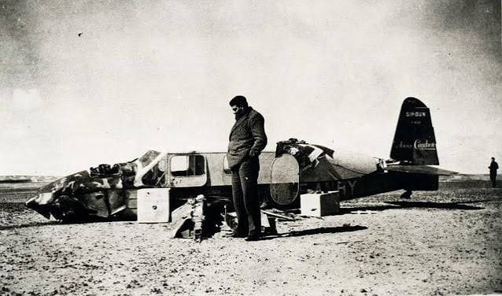

Before writing his masterpiece, Antoine de Saint-Exupéry worked as an intrepid reconnaissance pilot whose actual 1935 aircraft crash in the Libyan desert inspired the book's narrative frame.
The book's emotional core is anchored in real-world history.
Before writing his masterpiece, Antoine de Saint-Exupéry worked as an intrepid reconnaissance pilot whose actual 1935 aircraft crash in the Libyan desert inspired the book's narrative frame.
